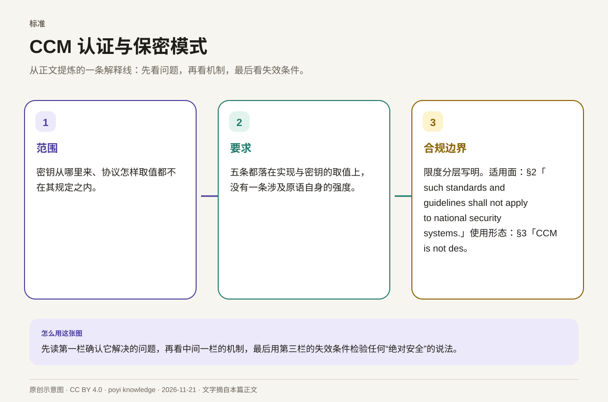
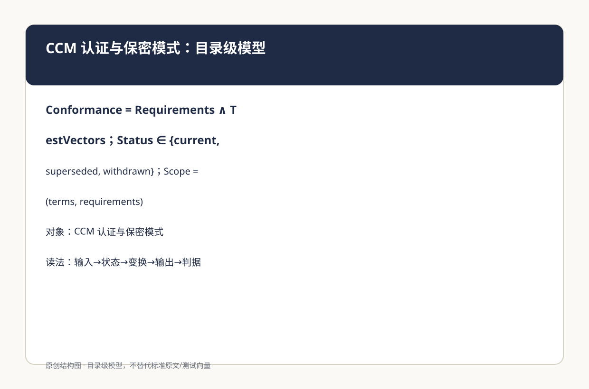

原理与机制
标准：CCM 认证与保密模式（The CCM Mode for Authentication and Confidentiality）。摘要第一句是模式定义：「This Recommendation defines a mode of operation, called CCM, for a symmetric key block cipher algorithm.」第二句写明组合方式：「CCM may be used to provide assurance of the confidentiality and the authenticity of computer data by combining the techniques of the Counter (CTR) mode and the Cipher Block Chaining-Message Authentication Code (CBC-MAC) algorithm.」关键词行把两面并列出来：「KEY WORDS: authenticated encryption; authentication; block cipher; confidentiality; cryptography; encryption; information security; message authentication code; mode of operation.」§1 交代其在系列中的位置：「This publication is the third Part in a series of Recommendations regarding modes of operation of symmetric key block cipher algorithms.」即本文件不提出新算法，只把两种既有原语装进同一套过程，认证与保密两面并列出现；密钥从哪里来、协议怎样取值都不在其规定之内。

为什么重要
要解决的是一次处理同时给出机密与认证：§3 写「CCM consists of two related processes: generation-encryption and decryption-verification, which combine two cryptographic primitives: counter mode encryption and cipher block chainingbased authentication.」并限定所用原语：「Only the forward cipher function of the block cipher algorithm is used within these primitives.」认证的相对优势另有一句：「A MAC provides stronger assurance of authenticity than a checksum or an error detecting code.」风险则落在密钥上：「The security properties of CCM depend, at a minimum, on the secrecy of the key.」四句合起来是本文件的立场：两个原语合用一把密钥，只要前向密码函数即可，代价是密钥保密成为最低前提。
应用与实例
§5.1 的要求多为 shall 级：「The underlying block cipher algorithm shall be approved, and a secret key for the block cipher algorithm shall be generated uniformly at random, or close to uniformly at random」与「The key shall be kept secret and shall only be used for the CCM mode.」同节还给出调用总量的硬顶：「The total number of invocations of the block cipher algorithm during the lifetime of the key shall be limited to 261.」（此处的 261 是 2 的 61 次方在抽取时丢了上标）§5.3 把 nonce 写成不得重复：「The nonce shall be non-repeating in the sense that any two distinct data pairs to be protected by CCM during the lifetime of the key shall be assigned distinct nonces.」并补一句：「The nonce is not required to be random.」几处措辞层级一致：算法须批准、密钥须保密且专用、调用次数封顶、nonce 须唯一而随机性不作要求；五条都落在实现与密钥的取值上，没有一条涉及原语自身的强度。

边界与攻击面
限度分层写明。适用面：§2「such standards and guidelines shall not apply to national security systems.」使用形态：§3「CCM is not designed to support partial processing or stream processing.」底层密码：§3「thus, CCM cannot be used with the Triple Data Encryption Algorithm」。被组合的原语本身不获批准：§5.2「This Recommendation does not approve CBC-MAC as an authentication mode outside of the context of the CCM specification」。密钥工作另交他文：§5.1「Key establishment and key management are outside the scope of this Recommendation.」标签长度亦有条件：附录 B.2「a value of Tlen that is less than 64 shall not be used without a careful analysis of the risks of accepting inauthentic data as authentic.」六处限度分属不同层：适用面排除国家安全系统，使用形态要求整包数据到位，可选密码受分组长度约束，被借用的 CBC-MAC 本身不获批准，密钥工作另交他文，短标签须另做风险分析。
历史与背景
扉页连读为「NIST Special Publication 800-38C Recommendation for Block Cipher Modes of Operation: The CCM Mode for Authentication and Confidentiality Morris Dworkin」，分册标题用 Confidentiality 而非 Privacy；日期行写「May 2004 (errata update 07-20-2007; corrected value of parameter B on p.19)」，即 2004 年 5 月初版并于 2007 年 7 月 20 日并入勘误。引用行给出页数与日期：「Natl.Inst.Stand.Technol.Spec.Publ.800-38C 25 pages (May 2004) CODEN: NSPUE2」，本份文本无 DOI 行。附录 A 交代标准化前的出处：「With these functions, this specification of CCM is essentially equivalent to the specification of CCM in the draft amendment [4] to the IEEE Standard 802.11 for wireless local area networks [5].」题页、引用行与附录合起来给出这份副本的版次事实：分册号与标题、单一作者、初版月份、并入勘误的日期与页数，以及该模式在标准化之前的 WLAN 出处。
逐步示例与核验
形式模型与复算步骤
[S=\min_i S_i,\quad S_i\in{\text{密钥强度},\text{分组安全},\text{实现安全}}]
CCM 认证与保密模式的公开参数、密钥/随机数与消息；变量说明：S 为综合安全强度；各分量取最小值，不能只看密钥位数。1.读取标准规定的密钥/分组/模式参数。2.按标准表换算等效强度。3.取最弱分量作为系统强度。边界：公式只覆盖已登记的参数与假设；参数取值、标准版本和实现细节仍以来源为准。
参考出处
- Wikipedia search entry for CCM 认证与保密模式. https://zh.wikipedia.org/w/index.php?search=CCM%20%E8%AE%A4%E8%AF%81%E4%B8%8E%E4%BF%9D%E5%AF%86%E6%A8%A1%E5%BC%8F
- Handbook of Applied Cryptography (Menezes, van Oorschot, Vanstone). https://www.cacr.math.uwaterloo.ca/hac/